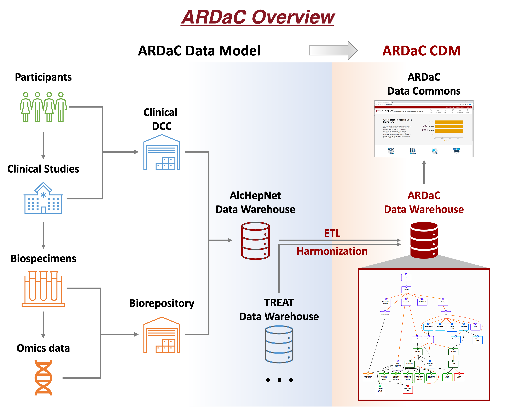

ARDaC

The Indiana University Data Coordinating Center (IU DCC) provides the Alcohol-associated hepatitis Research Data Commons (ARDaC). ARDaC is an essential research infrastructure that supports experimental design, study implementation, data management, and statistical analysis in alcohol-associated hepatitis (AH) research.
ARDaC contains data generated by the Alcoholic Hepatitis Network project, AlcHepNet (http://www.alchepnet.org/), which is sponsored by the National Institute on Alcohol Abuse and Alcoholism (NIAAA). AlcHepNet conducts clinical studies, provides clinical data management and statistical analysis. It also functions as the central biorepository of the network. ARDaC is a web-based data commons, functions as an interactive user interface of the collected study data and biospecimens. ARDaC currently presents demographic and behavioral features, clinical conditions, laboratory tests, treatments and outcomes. It is being extended to include multiomics data from microbiome, immunologic, proteomic, metabolomic, lipidomic, and RNA/ChIP-sequencing analyses.
ARDaC facilitates effective research use of the rich and complex AlcHepNet data. It serves as the central data hub and research nexus (https://portal.ardac.org/).
For more information, visit https://ardac.org/